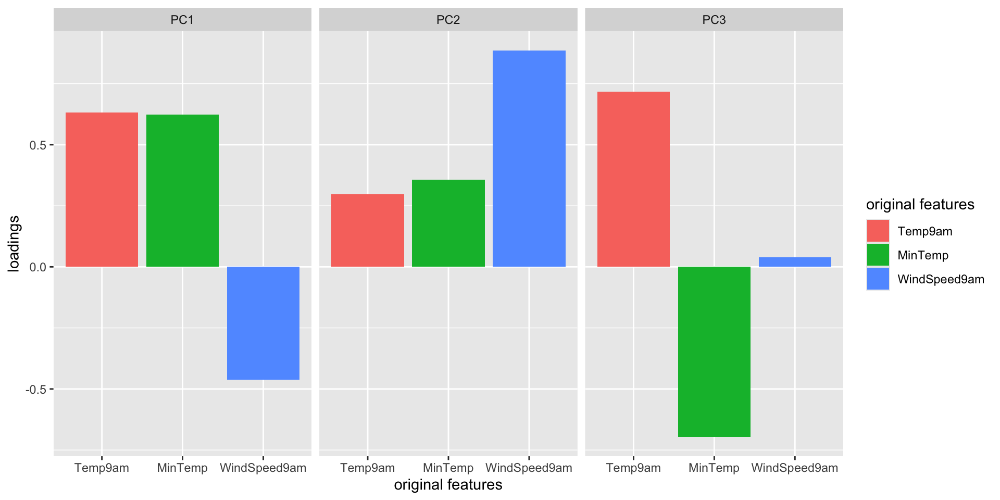
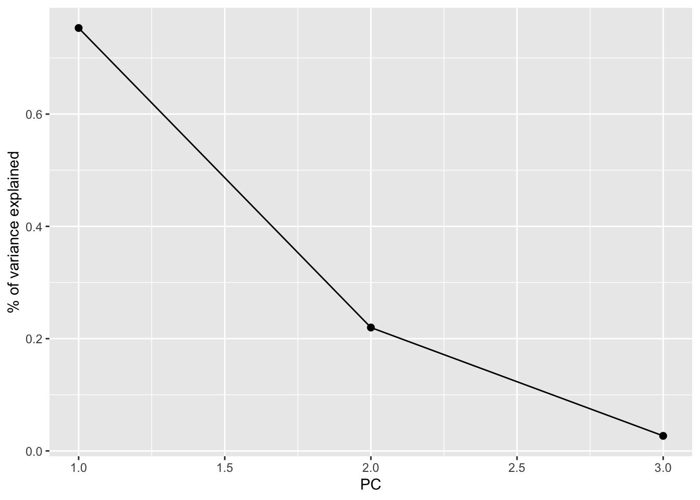
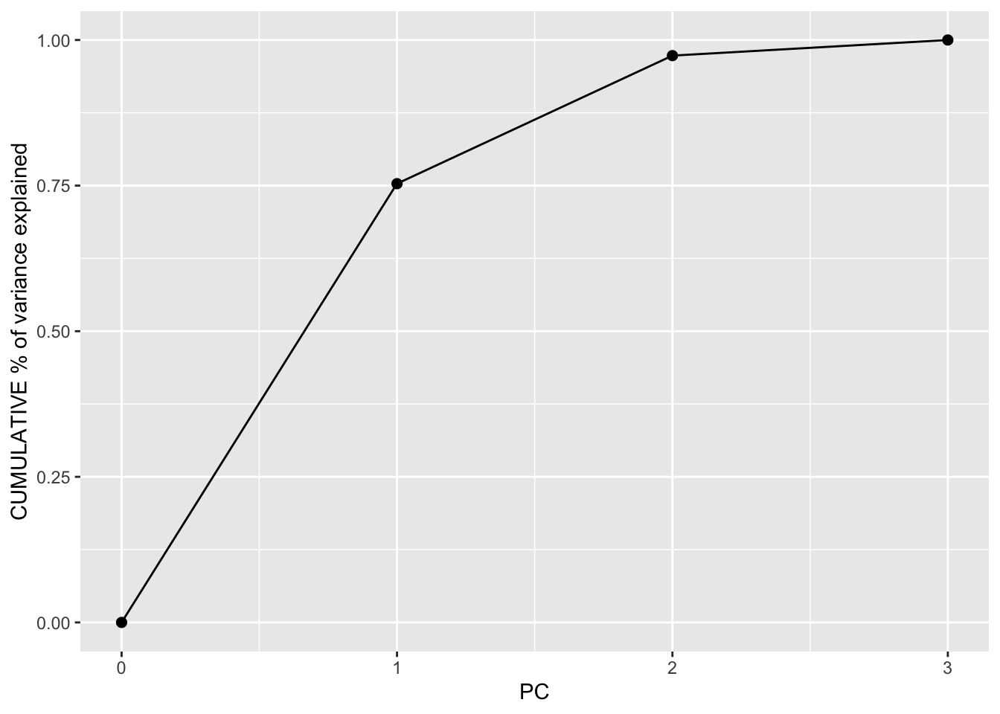
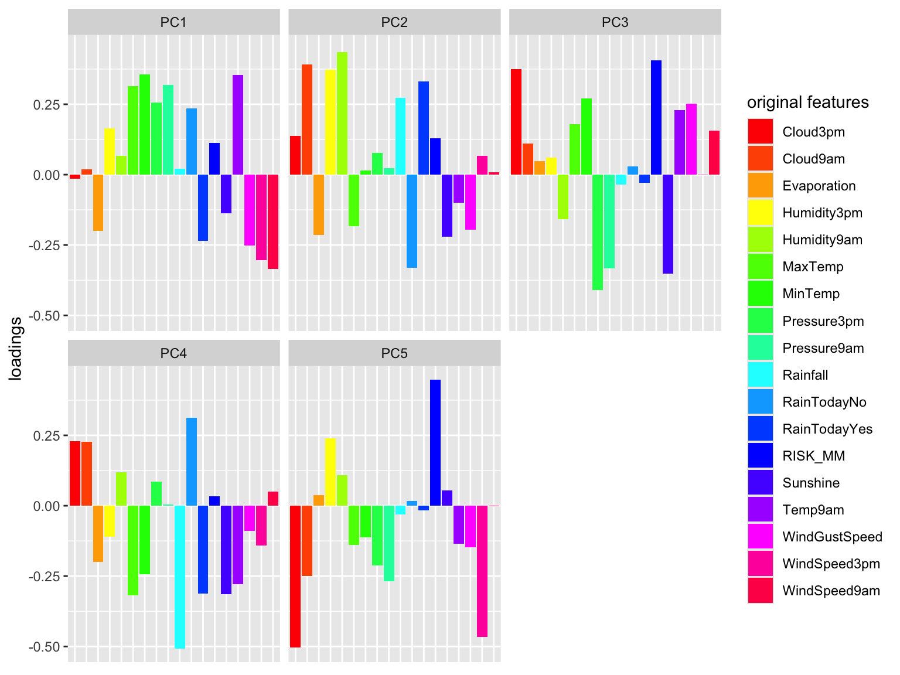
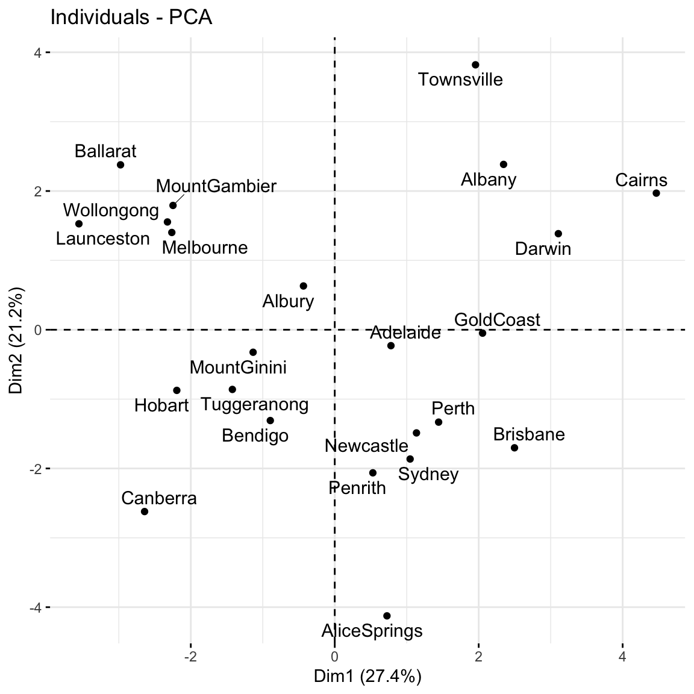

Prepare to take notes (find the QMD template in the usual spot)
Catch up on any announcements you’ve missed on Slack
Notes: PCA
Context
In unsupervised learning we don’t have any y outcome variable, we’re just exploring the structure of our data. This can be divided into 2 types of tasks:
clustering
GOAL: examine structure & similarities among the individual observations (rows) of our dataset
METHODS: hierarchical and K-means clustering
dimension reduction
GOAL: examine & simplify structure among the features (columns) of our dataset
METHODS: principal components analysis (and many others, including singular value decomposition (SVD), Uniform Manifold Approximation and Projection (UMAP))
Dimension Reduction Motivation
Especially when we have a lot of features, dimension reduction helps:
identify patterns among the features
conserve computational resources
feature engineering: create salient features to use in regression & classification (will discuss next class)
Thus we have high dimensional data with 3,000 rows (n) and 500,000 columns (p), thus p > n. We can capture much of the geographic relationship by reducing these 500,000 features to just 2 principal components!
PCA Details
Suppose we start with high dimensional data with p correlated features: \(x_1\), \(x_2\), …, \(x_p\).
We want to turn these into a smaller set of k < p features or principal components\(PC_1\), \(PC_2\), …., \(PC_k\) that:
are uncorrelated (i.e. each contain unique information)
preserve the majority of information or variability in the original data
Step 1
Define the p principal components as linear combinations of the original x features. These combinations are specified by loadings or coefficients a:
The first PC\(PC_1\) is the direction of maximal variability – it retains the greatest variability or information in the original data.
The subsequent PCs are defined to have maximal variation among the directions orthogonal to / perpendicular to / uncorrelated with the previously constructed PCs.
Step 2
Keep only the subset of PCs which retain “enough” of the variability / information in the original dataset.
Small Group Discussion
Data Details
Recall the Australian weather data from earlier this semester:
We could simply eliminate days with any missing values, but this would kick out a lot of useful info.
Instead, we’ll use KNN to impute the missing values using the VIM package.
# If your VIM package works, use this chunk to process the datalibrary(VIM)# It would be better to impute before filtering & selecting# BUT it's very computationally expensive in this caseweather_temp <- weatherAUS %>%filter(Date =="2008-12-01") %>% dplyr::select(-Date, -RainTomorrow, -Temp3pm, -WindGustDir, -WindDir9am, -WindDir3pm) %>% VIM::kNN(imp_var =FALSE)# Now convert Location to the row name (not a feature)weather_temp <- weather_temp %>%column_to_rownames("Location") # Create a new data frame that processes logical and factor features into dummy variablesweather_data <-data.frame(model.matrix(~ . -1, data = weather_temp))rownames(weather_data) <-rownames(weather_temp)
The goal of PCA will be to combine these correlated features into a smaller set of uncorrelated principal components (PCs) without losing a significant amount of information.
The first PC will be defined to retain the greatest variability, hence information in the original features. What do you expect the first PC to be like?
How many PCs do you think we’ll need to keep without losing too much of the original information?
Solution:
We might expect it to be driven by Temp9am and MinTemp which are strongly correlated.
Maybe 2? PC1 might contain strong info about the temp features and PC2 might contain strong info about wind.
EXAMPLE 3: Defining the PCs
Perform a PCA on the small_example data:
# This code is nice and short!# scale = TRUE, center = TRUE first standardizes the featurespca_small <-prcomp(small_example, scale =TRUE, center =TRUE)
This creates 3 PCs which are each different combinations of the (standardized) original features:
# Original (standardized) featuresscale(small_example) %>%head()
EXAMPLE 4: Examining the components of each PC (part 1)
Plots can help us interpret the above numerical loadings, hence the important components of each PC.
Code
# Plot the loadings for all 3 PCslibrary(reshape2)melt(pca_small$rotation[, 1:3]) %>%ggplot(aes(x = Var1, y = value, fill = Var1)) +geom_bar(stat ="identity") +facet_wrap(~ Var2) +labs(y ="loadings", x ="original features", fill ="original features")

Which features contribute the most, either positively or negatively, to the first PC?
What about the second PC?
Solution:
PC1 is driven primarily by Temp9am and MinTemp (positively) and with contrast to WindSpeed9am (negatively)
PC2 is driven primarily by WindSpeed9am (positively)
EXAMPLE 5: Examining the components of each PC (part 2)
When we have a lot of features x, the above plots get messy. A loadings plot or correlation circle is another way to visualize PC1 and PC2 (the most important PCs):
each arrow represents a feature x
the x-coordinate of an arrow reflects the correlation between x and PC1
the y-coordinate of an arrow reflects the correlation between x and PC2
arrow length reflects how much the feature contributes to the first 2 PCs
It is powerful in that it can provide a 2-dimensional visualization of high dimensional data (just 3 dimensions in our small example here)!
Positively correlated features point in similar directions. The opposite is true for negatively correlated features. What do you learn here?
Which features are most highly correlated with, hence contribute the most to, the first PC (x-axis)? (Is this consistent with what we observed in the earlier plots?)
What about the second PC?
Solution:
Temp9am and MinTemp are highly positively correlated; Windspeed9am seems to have a negative relationship with temperature
Temp9am and MinTemp primarily contribute to PC1 with a bit of negative contrast with WindSpeed9am
WindSpeed9am contributes to PC2
EXAMPLE 6: Examining the amount of information captured by each PC (numerical metrics)
Now that we better understand the structures of the PCs, let’s examine the relative amount of information they each capture from the original set of features:
# Load package for tidy tablelibrary(tidymodels)# Measure information captured by each PC# Calculate variance from standard deviationpca_small %>%tidy(matrix ="eigenvalues") %>%mutate(var = std.dev^2)
var = amount of variability, hence information, in the original features captured by each PC
percent = % of original information captured by each PC
cumulative = cumulative % of original information captured by the PCs
What % of the original information is captured by PC1? Confirm using both the var and percent columns.
What % of the original information is captured by PC2?
In total, 100% of the original information is captured by PC1, PC2, and PC3. What % of the original info would we retain if we only kept PC1 and PC2, i.e. if we reduced the PC dimensions by 1? Confirm using both the percent and cumulative columns.
Solution:
75.3%
2.26/ (2.26+0.660+0.0805)
[1] 0.7532078
22.0%
97.3%
0.753+0.220
[1] 0.973
EXAMPLE 7: Examining the amount of information captured by each PC (SCREE plots)
Especially when we start with lots of features, graphical summaries of the above tidy summary can help understand the variation captured by the PCs:
Code
# SCREE PLOT: % of variance explained by each PCpca_small %>%tidy(matrix ="eigenvalues") %>%ggplot(aes(y = percent, x = PC)) +geom_point(size =2) +geom_line() +labs(y ="% of variance explained")

Code
# Cumulative % of variance explainedpca_small %>%tidy(matrix ="eigenvalues") %>%rbind(0) %>%ggplot(aes(y = cumulative, x = PC)) +geom_point(size =2) +geom_line() +labs(y ="CUMULATIVE % of variance explained")

Based on these summaries, how many and which of the 3 PCs does it make sense to keep?
Thus by how much can we reduce the dimensions of our dataset?
Solution:
2 (maybe 1). The first 2 PCs account for nearly 100% of the variance. (The first PC alone also accounts for a lot, and maybe enough depending upon our research goals.)
EXAMPLE 8: Examining the new PC coordinates of the data points (score plots)
Finally, now that we better understand the “meaning” of our 3 new PCs, let’s explore their outcomes for each city (row) in the dataset.
A score plot maps out the scores of the first, and most important, 2 PCs for each city. PC1 is on the x-axis and PC2 on the y-axis.
Question: Unless you’re familiar with Australian geography, it might be tough to ascertain any meaningful patterns here. Looking back to the map, and recalling the key information captured by PC1 and PC2, does there appear to be any geographical explanation of which cities are similar with respect to their PC1 and PC2 scores?
Code
# Score plot: plot PC1 scores (x-axis) vs PC2 scores (y-axis) of all data pointsfviz_pca_ind(pca_small, repel =TRUE)
Solution:
will vary. it’s not obvious to me personally! Some students have shared that more northern (warmer) cities tend to be “clustered”. Ditto southern (cooler) cities.
EXAMPLE 9: PCA using all features
Repeat the PCA using all 18 original features in the weather_data, our goal being to reduce the dimensions of this dataset while still maintaining a “sufficient” amount of the original information!
pca_weather <-prcomp(weather_data, scale =TRUE, center =TRUE)
This produces 18 uncorrelated PCs that are linear combinations of the original (standardized) features:
Suppose we wanted to retain at least 80% of the information in the original 18 features. What’s the smallest number of PCs we need to keep? Thus how much can we reduce the original dimensions?
# Cumulative % of variance explained (in numbers)pca_weather %>%tidy(matrix ="eigenvalues")
# Cumulative % of variance explained (plot)pca_weather %>%tidy(matrix ="eigenvalues") %>%rbind(0) %>%ggplot(aes(y = cumulative, x = PC)) +geom_point(size =2) +geom_line()
Check out some plots of the loadings in the more important PCs. Describe the general properties of the first 2 PCs. What original features do they most capture?
# Plot the loadings for first 5 PCs # We have to use a different color palette -- we need enough colors for our 18 featurespca_weather$rotation %>%as.data.frame() %>%select(PC1:PC5) %>%rownames_to_column(var ='Variable') %>%pivot_longer(PC1:PC5 ,names_to ='PC', values_to ='Value') %>%ggplot(aes(x = Variable, y = Value, fill = Variable)) +geom_bar(stat ="identity") +facet_wrap(~ PC) +labs(y ="loadings", x ="original features", fill ="original features") +scale_fill_manual(values =rainbow(18)) +theme(axis.title.x=element_blank(),axis.text.x=element_blank(),axis.ticks.x=element_blank())

# Loadings plot: first 2 PCsfviz_pca_var(pca_weather, repel =TRUE)

Finally, check out the score plot for the first 2 PCs. Does there appear to be any geographical explanation of which cities are similar with respect to their PC1 and PC2 scores?
fviz_pca_ind(pca_weather, repel =TRUE)
Solution:
5
first PC is driven by air related features such as windspeed, air pressure, and temperature. second PC is driven by water related features such as humidity and rain.
again, not obvious to me!
EXAMPLE 10: Drawbacks
In what kind of scenario would you be relieved to have PCA as a tool?
What are the drawbacks of PCA? When might you hesitate to use it?
Solution:
when we have lots and lots of features, we want to simplify the data set while retaining the information, and we don’t care about losing the meaning of the original features.
if we’re specifically interested in the original features (and don’t want to combine them into tough to interpret PCs)
Exercises
NOTE
These exercises are on HW6. The R code section below will be handy.
PCA Part 1
There are quite a few features in the candy_rankings data. Let’s do some dimension reduction. NOTE: One of the challenges of continuing to analyze the dataset using different techniques is that these techniques work differently, thus can require differently structured data. With this in mind, take care at the beginning this exercise to ensure that you’re working with the original data (without any clustering info in it).
Construct PCA for the original features in candy_rankings with the following in mind:
Do not include winpercent in your PCA
Do not include any new features (eg: cluster assignments) in your PCA
Construct a score plot.
Provide two takeaways, or things you learned, from the score plot. NOTE: If you’re unfamiliar with the candies, you might look back at their data.
Are your observations about candies in part c consistent with your clustering conclusions? Explain what similarities or differences do you notice.
PCA Part 2
Construct a plot of the cumulative percent of the original information captured by the PCs.
How many principal components do we need to keep in order to retain at least 60% of the information in the 11 original candy features?
Construct a loadings plot AND a bar plot of the loadings for the first 2 PCs.
Highlight one pair of the original features that are positively correlated AND one pair that are negatively correlated.
Point out at least 2 original features that contribute most strongly (positively or negatively) to the first principal component. If you notice any theme to these features, say so.
Wrapping Up
As usual, take time after class to finish any remaining exercises, check solutions, reflect on key concepts from today, and come to office hours with questions
Upcoming due dates:
Group Assignment 2: due TONIGHT
HW6 (last one!!): due Wednesday after break (Dec 4)
Quiz 2 Revisions: bring to class Thursday after break (Dec 5)
Notes: R code
Suppose we have a set of sample_data with multiple feature columns x, and (possibly) a column named id which labels each data point.
# Install packageslibrary(tidyverse)
PROCESS THE DATA
If there’s a column that’s an identifying variable or label, not a feature of the data points, convert it to a row name.
PCA can’t handle NA values! There are a couple options.
# Omit missing cases (this can be bad if there are a lot of missing points!)sample_data <-na.omit(sample_data)# Impute the missing caseslibrary(VIM)sample_data <- sample_data %>% VIM::kNN(imp_var =FALSE)
IF you have at least 1 categorical / factor feature, you’ll need to pre-process the data even further. You should NOT do this if you have quantitative and/or logical features.
# Turn categorical features into dummy variablessample_data <-data.frame(model.matrix(~ . -1, sample_data))
RUN THE PCA
# scale = TRUE, center = TRUE first standardizes the featurespca_results <-prcomp(sample_data, scale =TRUE, center =TRUE)
CHECK OUT THE PCs
# Get the loadings which define the PCspca_results %>%pluck("rotation")# Plot loadings for first "k" PCs (you pick k)library(reshape2)melt(pca_results$rotation[, 1:k]) %>%ggplot(aes(x = Var1, y = value, fill = Var1)) +geom_bar(stat ="identity") +facet_wrap(~ Var2) +labs(y ="loadings", x ="original features", fill ="original features")# Plot loadings for just the first PCmelt(pca_results$rotation) %>%filter(Var2 =="PC1") %>%ggplot(aes(x = Var1, y = value, fill = Var1)) +geom_bar(stat ="identity") +labs(y ="loadings", x ="original features", fill ="original features")# Loadings plot for first 2 PCslibrary(factoextra)fviz_pca_var(pca_results, repel =TRUE)
EXAMINE AMOUNT OF VARIABILITY / INFORMATION CAPTURED BY EACH PC
# Load package for tidy tablelibrary(tidymodels)# Numerical summaries: Measure information captured by each PCpca_results %>%tidy(matrix ="eigenvalues")# Graphical summary 1: SCREE PLOT# Plot % of variance explained by each PCpca_results %>%tidy(matrix ="eigenvalues") %>%ggplot(aes(y = percent, x = PC)) +geom_point(size =2) +geom_line() +labs(y ="% of variance explained")# Graphical summary 2: Plot cumulative % of variance explained by each PCpca_results %>%tidy(matrix ="eigenvalues") %>%rbind(0) %>%ggplot(aes(y = cumulative, x = PC)) +geom_point(size =2) +geom_line() +labs(y ="CUMULATIVE % of variance explained")
EXAMINE THE SCORES, i.e PC COORDINATES FOR THE DATA POINTS
# Numerical summary: check out the scorespca_results %>%pluck("x")# Graphical summary: Score plot# Plot PC1 scores (x-axis) vs PC2 scores (y-axis) of all data pointsfviz_pca_ind(pca_results, repel =TRUE)
Deeper learning (OPTIONAL)
ALTERNATIVES TO PCA
For more dimension reduction techniques, check out:
Let \(X\) be our original (centered) \(n \times p\) data matrix. Mathematically, PCA produces an orthogonal linear transformation of \(X\). To this end, first note that the covariance or relationship among the features in \(X\) is proportional to the \(p \times p\) matrix
\[X^TX\]
Further, we can express this covariance structure as
\[X^TX = W \Lambda W^T\]
where \(W\) is a \(p \times p\) matrix, the columns of which are eigenvectors of \(X^TX\), and \(\Lambda\) is a diagonal matrix of eigenvalues.
principal components
The \(p\) principal components are defined by the columns of \(W\).
scores \(XW\) maps the original data to the transformed data set, the columns of which are the scores (coordinates) for each of the PCs.
loadings
Scaling the columns of \(W\), ie. multiplying them by the square root of the corresponding eigenvalue, gives the loadings.
proportion of variance explained by each principal component
The eigenvalues in \(\Lambda\) measure the relative proportion of variability that’s explained by each principal component (eg: \(\lambda_1 / (\lambda_1 + \cdots + \lambda_p)\)).
Alternatively, we can obtain the principal components via singular value decomposition (SVD). Instead of decomposing \(X^TX\), SVD decomposes \(X\). In fact, this is a bit more computationally stable! Specifically, SVD expresses \(X\) as
\[X = U \Sigma W^T\]
where \(U\) is an \(n \times n\) matrix of orthogonal left singular vectors of \(X\) and \(\Sigma\) is an \(n \times p\) diagonal matrix of singular values. Then \(W\) still provides the principal components and the diagonal of \(\Sigma^2\) is equivalent to the diagonal of \(\Lambda\) since by the SVD,
\[X^TX = W \Sigma^T U^T U \Sigma W^T = W \Sigma^2 W^T\]